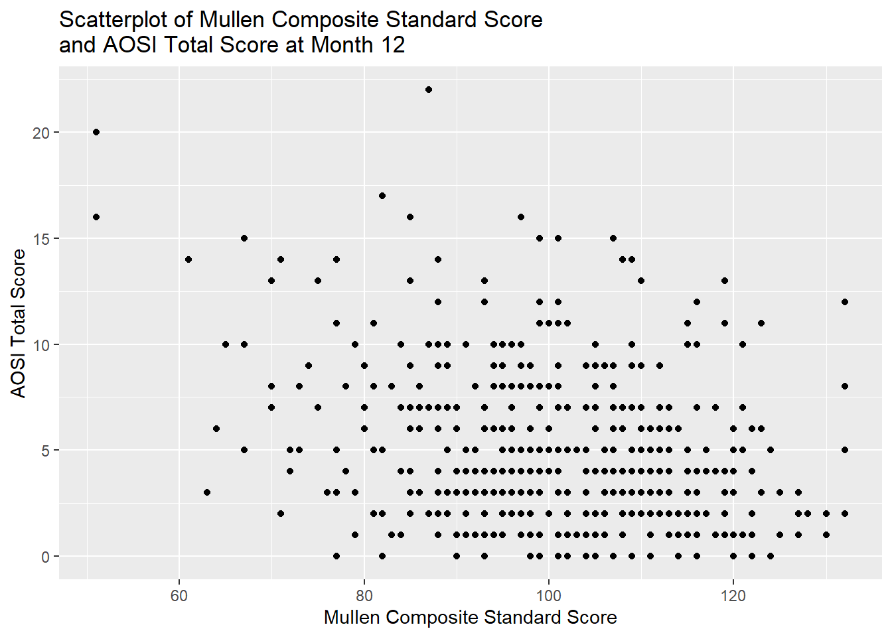

8 Regression Analysis Methods
full_data <- read.csv("Data/Cross-sec_full.csv", stringsAsFactors=FALSE, na.strings = c(".", "", " "))
library(ggplot2)
library(tidyverse)8.1 Intro
Regression methods form the backbone of much of the analyses in research. In general, these methods are used to estimate associations between variables, espeically when one or more of these are variables are continuous. In this section, we cover linear regression, logistic regression, and mixed models. For most people, understanding these methods will be sufficient for the analyses required for their research. Since these methods are so often used, they are covered in great detail, so each reader should take into account their own knowledge of statistics when deciding which parts of this tutorial to read or skip over. Both the statistical motivation behind these methods and their implementation in R to data are covered, and understanding both concepts is essential when carrying out your own analyses. Furthermore, terminology is introduced to help standardize the language used with these concepts across the IBIS network. The full cross sectional dataset is used for illustration of these concepts throughout this tutorial.
8.2 Linear Regression
8.2.1 Motivation
Suppose we are interested in the association between Mullen composite score (recorded as a standard score in the dataset) and Autism severity as measured by the AOSI, in children at month 12. Since both are continuous variables, a simple measure of this association is their correlation. Let’s see the scatterplot for these two variables.
ggplot(data=full_data, aes(x=V12.mullen.composite_standard_score, y=V12.aosi.total_score_1_18))+
geom_point()+
labs(x="Mullen Composite Standard Score",
y="AOSI Total Score",
title="Scatterplot of Mullen Composite Standard Score \nand AOSI Total Score at Month 12")
At best, there appears to be a weak, negative relationship between these variables. Let’s estimate the correlation. This can be done in R using cor(). Note that cor() does not have a data= argument, so you must specify the variables of interest in the dataset$variable form discussed in previous tutorials. Also, by default, if any of the variables have missing values, an NA is returned by cor(). To remove any subjects missing one or more of the variables from the calculation, specify use=“pairwise.complete” as an argument in the function. We can also 1) conduct a formal hypothesis test for zero correlation and 2) calculate a 95% confidence interval for the correlation using the function cor.test(). Note that the default correlation measure is Pearson, though this can be changed in both functions using the measure= argument. Also, when conducting the hypothesis test or calculating the confidence interval, we must always take into account any distributional assumptions that are used in these calculations (as discussed in Chapters 6 and 7). For the hypothesis test and confidence interval calculations done here to be valid, one of the following needs to hold: 1) the two variables are jointly normally distributed or 2) sample size is “large enough” for the approximate distribution of the test statistic to be accurate. This approximate distribution is a T distribution with \(n-2\) degrees of freedom, where \(n\) denotes the sample sze. Hence, the test statistic value in the R output is denoted by t.
## [1] NAcor(x=full_data$V12.mullen.composite_standard_score, y=full_data$V12.aosi.total_score_1_18,
use="pairwise.complete")## [1] -0.2964536##
## Pearson's product-moment correlation
##
## data: full_data$V12.mullen.composite_standard_score and full_data$V12.aosi.total_score_1_18
## t = -7.01, df = 510, p-value = 7.59e-12
## alternative hypothesis: true correlation is not equal to 0
## 95 percent confidence interval:
## -0.3735142 -0.2153293
## sample estimates:
## cor
## -0.2964536We see that there evidence from data of a moderate, negative correlation between these variables.
However, using this pairwise correlation has its limitations as 1) it is a more “general” measure and 2) it does not account for other variables which may impact this association. To better illustrate the first point, consider the following scatterplots (created using simulated data).
# simulate data: this is explained in tutorial 9 for those who are interested
set.seed(123)
E <- rnorm(500)
X <- rnorm(500, mean=5)
Y1 <- 2*X+E
Y2 <- 6*X+E
# will use default R plotting functions, which we did not cover
plot(X, Y1, main="Scatterplot Example: Dataset 1 in black, Dataset 2 in blue", xlim = c(0, 8), ylim=c(0, 50), ylab="Y")
points(X, Y2, col="blue")
text(x=7, y=9,labels=paste("Cor=",round(cor(X, Y1),2),sep=""))
text(x=7, y=35,labels=paste("Cor=",round(cor(X, Y2),2),sep=""), col="blue")
## [1] 0.8969942## [1] 0.9872073We can see that both examples have similar correlation, though the dataset denoted in blue has a much larger increase in variable \(Y\) as variable \(X\) increases. It would be useful to more explictly measure these “slopes” and adjust this measure based on other variables of interest which may impact the association.
8.2.2 Methodology
8.2.3 Overview
Suppose variables \(X\) and \(Y\) are of interest, where \(Y\) is continuous (\(X\) can be discrete or continuous). With linear regression, we specify the following model between these variables: \(Y=\beta_0+\beta_1X+\epsilon\).
Where \(\epsilon\) is commonly thought of as the “error term” for the model. We assume \(\epsilon\) has mean zero and variance denoted by \(\sigma^2\).
For variables \(X\) and \(Y\), denote the mean of \(Y\) conditional on \(X\) by \(\mbox{E}(Y|X)\). With linear regression, since the mean of \(\epsilon\) is 0,
\(\mbox{E}(Y|X)=\beta_0+\beta_1X\)
which is a linear function of \(X\). When we apply this model to data, we assume that each observation’s \(\epsilon\) is independent, which implies that each observation’s outcome \(Y\) is independent as \(Y\) is a function of \(\epsilon\). As a result, for data were there are multiple observations per subject, the linear regression model would not hold true and applying it would not produce valid results.
We see that \(\beta_0\) (the intercept) represents the mean of \(Y\) when \(X\) is 0 and \(\beta_1\) (the slope) represents the change in mean of \(Y\) when \(X\) increases by 1. Based on this model, we want to estimate the parameters \(\beta_0\) and \(\beta_1\) with the slope serving as a measure of the association between \(X\) and \(Y\). We denote the estimates with \(\hat{\beta_0}\) and \(\hat{\beta_1}\) respectively. This is generally done using least squares estimation.
Since the estimates of the intercept and slope will vary across samples from a given populuation, we would like to account for this randomness. This generally done by conducting a hypothesis test and/or computing a confidence interval. In linear regression, the standard methods for computing a p-value from a hypothesis test or a confidence interval require one of two assumptions to hold: 1) \(\epsilon\) is normally distributed or 2) the sample size is large enough for your intercept and slope estimates (\(\hat{\beta}_0\) and \(\hat{\beta}_1\) respectively) to be approximately normally distributed. If one of these hold, the test statistic has (approximately if a large sample approximation is used) a T distribution with \(n-p\) degrees of freedom where \(p\) denotes the number of parameters in the model (\(p=2\) in this case). A p-value can then be calculated using this distribution, along with a confidence interval.
As a result, when doing a linear regression analysis, we have a set of assumptions that we need to check using the data.
- Mean of \(Y\) given \(X\) is a linear function of \(X\)
- Across values of \(X\), the error terms have equal variances (called homoskedasticity)
- Across values of \(X\), the error terms are normally distributed or the sample size is large enough for the large sample approximation to be accurate
- All error terms/observations in the data are independent
Assumptions 1), 2), and 3) can be evaluated from the data while 4) is usually evaluated based on the study design from which the data originated.
Now, suppose we were also interested in adjusting these associations for another variable \(Z\) (can be continuous or categorical). We can specify the following linear regression model: \(Y=\beta_0+\beta_1X+\beta_2Z+\epsilon\).
\(\mbox{E}(Y|X,Z)=\beta_0+\beta_1X+\beta_2Z\)
where \(\epsilon\) has the same properties as before. Statisticians often refer to \(Y\) as the outcome, \(X\) and \(Z\) as predictors or covariates, and \(\beta_0, \beta_1\), and \(\beta_2\) as regression parameters. Notice that now we are doing inference on the mean of \(Y\) conditional on \(X\) and \(Z\). Futhermore, you see that \(\beta_1\) represents the change in the mean of \(Y\) when \(X\) increases by 1 unit and \(Z\) is held fixed:
\(\mbox{E}(Y|X+1,Z)-\mbox{E}(Y|X,Z)\)
\(=\beta_0+\beta_1(X+1)+\beta_2Z-(\beta_0+\beta_1X+\beta_2Z)\)
\(=\beta_0+\beta_1X+\beta_1+\beta_2Z-(\beta_0+\beta_1X+\beta_2Z)\)
\(=\beta_1\)
Thus, we are conducting inference about the relationship between \(Y\) and \(X\) controlling for \(Z\). You can control for any number of predictors; the interpretation of the regression parameters is the same as the one or two predictor scenarios discussed above.
8.2.4 Example 1: Continuous predictors
Let’s conduct a linear regression analysis of the relationship between AOSI total score and Mullen composite at 12 months, controlling for age at the month 12 visit. The corresponding regression model is:
\(AOSI=\beta_0+\beta_1Mullen+\beta_2Age+\epsilon\)
\(\mbox{E}(\epsilon)=0\), \(Var(\epsilon)=\sigma^2\), and all \(\epsilon\) are independent.
Anytime you are doing a regression analysis (including logistic regression and mixed models as discussed later), it is important to be able to explicitly write down the model you are using as we have done above. To apply the model to data and obtain estimates and confidence intervals (referred to as fitting the model) in R, you use the lm() function. The main syntax is the following: lm(y~x+z+…,data=…) where y is the name of the outcome variable, x and z are the predictors and data= is the argument where you specify the dataset to be used. The ~ symbol acts as the equal sign in the equation from the regression model.
# Fit the model to data to obtain estimates
lm(V12.aosi.total_score_1_18~V12.mullen.composite_standard_score
+V12.mullen.Candidate_Age, data=full_data)##
## Call:
## lm(formula = V12.aosi.total_score_1_18 ~ V12.mullen.composite_standard_score +
## V12.mullen.Candidate_Age, data = full_data)
##
## Coefficients:
## (Intercept) V12.mullen.composite_standard_score
## 12.34763 -0.07873
## V12.mullen.Candidate_Age
## 0.04692The estimated regression coefficients are returned. However, fitting the model produces many more results then just these estimates. To access the full results, first we need to save the lm() function output as a function. Then, we can access confidence intervals for the regression parameters, obtain p-values for hypothesis testing, obtain sum of squares measures and residuals, etc. This is done next in our AOSI example.
# Fit the model to data and save results as object
aosi_ex_1_fit <- lm(V12.aosi.total_score_1_18~V12.mullen.composite_standard_score
+V12.mullen.Candidate_Age, data=full_data)
summary(aosi_ex_1_fit)##
## Call:
## lm(formula = V12.aosi.total_score_1_18 ~ V12.mullen.composite_standard_score +
## V12.mullen.Candidate_Age, data = full_data)
##
## Residuals:
## Min 1Q Median 3Q Max
## -6.8582 -2.4493 -0.5611 1.9431 15.9197
##
## Coefficients:
## Estimate Std. Error t value Pr(>|t|)
## (Intercept) 12.34763 3.21106 3.845 0.000136
## V12.mullen.composite_standard_score -0.07873 0.01125 -6.999 8.17e-12
## V12.mullen.Candidate_Age 0.04692 0.23631 0.199 0.842687
##
## (Intercept) ***
## V12.mullen.composite_standard_score ***
## V12.mullen.Candidate_Age
## ---
## Signif. codes: 0 '***' 0.001 '**' 0.01 '*' 0.05 '.' 0.1 ' ' 1
##
## Residual standard error: 3.461 on 509 degrees of freedom
## (75 observations deleted due to missingness)
## Multiple R-squared: 0.08796, Adjusted R-squared: 0.08437
## F-statistic: 24.54 on 2 and 509 DF, p-value: 6.67e-11After saving the fit output, using the summary() with this object produces the standard results from a regression analysis. We now explain each element of this table.
- Residuals:
These are the error terms for each subject, which are the “gaps” between their actual outcome value and their predicted outcome value based on the fitted line (defined by \(\hat{\beta}_0+\hat{\beta_1}X+\hat{\beta_2}Z\)). The minimum, 1st quartile, median, 3rd quartile, and maximum of these from the data are reported
- Coefficients:
Here the regression parameter estimates and their standard errors are reported, as well as the test statistic and p-value corresponding to the hypothesis test that this parameter is 0. Recall each test statistic has a T distribution, hence the labels “t value” and “Pr(>|t|)”.
- Residual standard error:
Recall that the error term \(\epsilon\) is assumed to have variance \(\sigma^2\) for all observations in the data. The residual standard error is an estimate for \(\sigma\).
- R-squared:
The usual R-squared (“multiple”) and adjusted R-squared. Essentially, adjusted R-squared takes the usual R-squared and reduces it as the number of regression parameters in the model increases. Both reflect the same idea.
- F-statistic:
We have discussed conducting a hypothesis test for one single regression parameter equalling 0. To test if more then one regression parameters equal to 0, the test statistic has an F distribution with \(p-1\) numerator degrees of freedom and \(n-p-1\) denominator degrees of freedom. The test statistic and p-value reported here specifically correspond to the test for all non-intercept regression parameters equalling 0. This is generally not a hypothesis test of interest, though statistical software often reports it.
You will generally only be interested in the Coefficients section and maybe the R-squared results, though it is useful to have an idea of what the other terms in output represent. We see that there is evidence from the regression results of a negative association between AOSI total score and Mullen composite score at 12 months, controlling for Age, with a one unit increase in Mullen composite score corresponding to a 0.08 decrease in the mean AOSI total score at 12 months. From the very small p-value, there is strong evidence of a weak association. Furthermore, the two R-squared values are very small, around 0.08. This indicates that most of a subject’s AOSI score is coming from the error term (\(\epsilon\)) compared to the mean term (\(\beta_0+\beta_1Mullen+\beta_2Age\)).
8.2.5 Example 2: Categorical predictors
Now, suppose one of the two predictors is a categorical variable. Note that if you use a predictor that measures counts (i.e., it not exactly continuous but can take any integer value or any integer value greater than or equal to 0), the interpretation of the regression model is essentially the same as the continuous case. Suppose we consider the following regression model:
\(AOSI=\beta_0+\beta_1Mullen+\beta_2Diagnosis+\epsilon\)
\(\mbox{E}(\epsilon)=0\), \(Var(\epsilon)=\sigma^2\), and all \(\epsilon\) are independent.
where variable \(Diagnosis\) indicates clinical diagnosis of one of the following types: low risk:ASD (LR:ASD), low risk: negative (LR:Neg), high risk: ASD (HR:ASD) and high risk: negative (HR:Neg). To interpret the model, we require the
\(\beta_0\) to make sense and
\(Diagnosis\) to be numeric.
To accomplish 1), we need \(Diagnosis=0\) to make sense. One way of achieving these two goals is to have \(Diagnosis\) take values 0 (LR:ASD), 1 (LR:Neg), 2 (HR:ASD), or 3 (HR:Neg). Then, \(\beta_0\) denotes the mean AOSI total score at 12 months when a subject has a 0 Mullen composite score and is diagnosed as LR:ASD. The issue is that \(\beta_1\) measures the change in mean AOSI as \(Diagnosis\) changes by 1 and Mullen composite score is constant. If \(Diagnosis\) is coded in the above way, this implies that this change in mean AOSI is the same when going LR:ASD to LR:Neg as it is going from LR:Neg to HR:ASD. While this structure may be reasonable if the variable has an inherent ordering of least to most “severe”, in general with categorical variables it is a structure we would like avoid. Instead, we use “indicator variable” or dummy variable coding. With dummy variable coding, you represent the categorical variable with a set of binary (0 or 1) variables which indicate specific categories. For example, the previous regression model is replaced with the following:
\(AOSI=\beta_0+\beta_1Mullen+\beta_2HRneg+\beta_3LRasd+\beta_4LRneg+\epsilon\)
\(\mbox{E}(\epsilon)=0\), \(Var(\epsilon)=\sigma^2\), and all \(\epsilon\) are independent.
where \(HRneg=1\) if \(Diagnosis=HR:Negative\) and \(HRneg=0\) otherwise, with \(LRasd\) and \(LRneg\) defined similarly. Thus, \(Diagnosis=HR:ASD\) is denoted by \(HRneg=0, LRasd=0\), and \(LRneg=0\). HR:ASD is referred to as the reference group. As a result, for each subject, only one of these variables will equal 1 and the others will equal 0. This structure allows group-specific comparisons; see the ANOVA and ANCOVA section of this chapter for more detail. We can see that \(\beta_0\) denotes the mean AOSI total score for a subject with Mullen composite score of 0 and a diagnosis of HR:ASD, and \(\beta_1\) denotes the change in the mean AOSI total score when Mullen composite score increases by 1 unit and diagnosis is help constant, at 12 months. For the diagnosis groups, \(\beta_2\) denotes the change in the mean AOSI total score when diagnosis changes from HR:ASD to HR:Neg and Mullen composite score is held constant, at 12 months, with \(\beta_3\) and \(\beta_4\) having the same interpretations for LR:ASD and LR:Neg respectively.
Now, we fit this model to the data. When using the lm() function to fit a model with categorical predictors, if the predictor is coded as a character variable or a factor variable, R will automatically do dummy variable coding as shown below. To view the reference level used, view the xlevels object from the saved model fit object; the first value is what R is using as the reference level. This can also be seen in the fit results table; the reference level will not have regression coefficient results as detailed previously.
# Fit the model to data and save results as object
aosi_ex_2_fit <- lm(V12.aosi.total_score_1_18~V12.mullen.composite_standard_score
+GROUP, data=full_data)
summary(aosi_ex_2_fit)##
## Call:
## lm(formula = V12.aosi.total_score_1_18 ~ V12.mullen.composite_standard_score +
## GROUP, data = full_data)
##
## Residuals:
## Min 1Q Median 3Q Max
## -6.2913 -2.3751 -0.6146 2.1165 16.3076
##
## Coefficients:
## Estimate Std. Error t value Pr(>|t|)
## (Intercept) 12.85779 1.13129 11.366 < 2e-16
## V12.mullen.composite_standard_score -0.05988 0.01157 -5.176 3.27e-07
## GROUPHR_neg -1.95569 0.44015 -4.443 1.09e-05
## GROUPLR_ASD -3.16309 1.98818 -1.591 0.112
## GROUPLR_neg -2.53927 0.49520 -5.128 4.18e-07
##
## (Intercept) ***
## V12.mullen.composite_standard_score ***
## GROUPHR_neg ***
## GROUPLR_ASD
## GROUPLR_neg ***
## ---
## Signif. codes: 0 '***' 0.001 '**' 0.01 '*' 0.05 '.' 0.1 ' ' 1
##
## Residual standard error: 3.377 on 507 degrees of freedom
## (75 observations deleted due to missingness)
## Multiple R-squared: 0.1354, Adjusted R-squared: 0.1285
## F-statistic: 19.84 on 4 and 507 DF, p-value: 3.439e-15## $GROUP
## [1] "HR_ASD" "HR_neg" "LR_ASD" "LR_neg"To set your own reference level for the variable, first you must make sure it is a factor variable. You can make it one using factor() (see tutorials “Objects and Functions” and “dplyr”). Once the variable is a factor, you can set the reference level using relevel(), with the syntax relevel(variable, ref=…) where the reference level value is place in the ref= argument. In the example below, we set the reference level to LR:ASD per the model above.
# Set reference level
full_data_2 <- full_data %>%
mutate(GROUP=factor(GROUP) %>%
relevel(ref="LR_ASD"))
full_data_2$GROUP # is a factor, LR_ASD is the first level## [1] HR_ASD HR_ASD HR_ASD HR_ASD HR_neg HR_neg HR_ASD HR_ASD HR_neg HR_ASD
## [11] HR_neg HR_neg HR_neg HR_neg LR_neg HR_neg HR_ASD HR_neg HR_neg HR_neg
## [21] HR_neg HR_neg HR_neg HR_ASD HR_ASD HR_neg HR_neg LR_neg LR_neg HR_neg
## [31] HR_neg LR_neg LR_neg HR_neg LR_neg HR_neg LR_neg HR_neg HR_ASD HR_neg
## [41] LR_neg LR_neg LR_neg HR_neg HR_neg HR_neg HR_neg HR_neg LR_neg LR_neg
## [51] LR_neg LR_neg LR_neg LR_neg HR_ASD HR_neg LR_neg LR_neg HR_neg HR_neg
## [61] HR_neg LR_neg HR_ASD HR_ASD HR_ASD LR_neg HR_neg HR_neg HR_neg HR_ASD
## [71] HR_ASD LR_neg LR_neg HR_ASD LR_neg LR_neg HR_neg HR_neg HR_neg HR_neg
## [81] HR_neg HR_neg HR_neg HR_neg LR_neg HR_neg HR_ASD HR_neg HR_ASD HR_neg
## [91] HR_neg LR_neg HR_neg HR_neg HR_neg LR_neg HR_neg HR_neg HR_neg HR_neg
## [101] HR_neg HR_neg LR_neg HR_neg HR_neg HR_neg LR_neg HR_neg HR_neg HR_neg
## [111] HR_neg HR_neg HR_neg HR_neg HR_neg HR_ASD HR_neg HR_neg HR_neg HR_neg
## [121] HR_ASD HR_neg HR_ASD HR_neg HR_neg HR_neg HR_neg LR_neg HR_neg HR_neg
## [131] HR_neg HR_ASD LR_neg LR_neg LR_neg LR_neg LR_neg LR_neg LR_neg LR_neg
## [141] LR_neg HR_neg HR_neg HR_ASD HR_neg HR_neg LR_neg HR_ASD HR_ASD HR_ASD
## [151] LR_neg HR_neg HR_neg HR_neg HR_neg HR_neg HR_neg HR_ASD HR_neg HR_neg
## [161] HR_neg HR_neg HR_neg HR_neg HR_ASD HR_neg HR_ASD HR_neg LR_neg LR_neg
## [171] LR_neg HR_neg HR_neg HR_neg HR_ASD LR_neg HR_neg HR_neg LR_neg HR_neg
## [181] LR_neg HR_ASD LR_neg LR_neg HR_neg HR_ASD HR_neg HR_neg LR_neg LR_neg
## [191] HR_neg HR_neg LR_neg LR_neg LR_neg LR_neg HR_neg LR_neg HR_neg HR_neg
## [201] HR_neg HR_neg HR_neg LR_ASD HR_neg LR_neg LR_neg HR_neg HR_neg HR_neg
## [211] HR_neg HR_neg HR_neg HR_neg LR_neg LR_neg LR_neg LR_neg LR_neg HR_neg
## [221] HR_neg HR_neg HR_ASD HR_neg LR_neg HR_ASD LR_neg LR_neg LR_neg LR_neg
## [231] HR_neg HR_ASD HR_neg LR_neg HR_neg HR_neg HR_ASD LR_ASD LR_neg HR_ASD
## [241] LR_neg LR_neg LR_neg LR_neg HR_ASD HR_neg HR_ASD HR_neg HR_neg HR_neg
## [251] HR_neg LR_neg HR_neg HR_neg HR_ASD HR_neg LR_neg HR_neg LR_neg HR_neg
## [261] HR_neg HR_ASD HR_ASD HR_ASD HR_ASD HR_ASD HR_neg HR_ASD LR_neg LR_neg
## [271] LR_neg LR_neg HR_neg LR_neg LR_neg HR_neg HR_neg HR_neg HR_ASD HR_neg
## [281] HR_neg HR_neg HR_ASD LR_neg LR_neg HR_neg HR_ASD HR_neg HR_ASD HR_ASD
## [291] HR_neg HR_neg HR_neg LR_neg HR_ASD HR_ASD HR_neg LR_neg HR_neg HR_neg
## [301] HR_neg HR_neg HR_neg HR_neg HR_neg HR_neg HR_neg HR_neg HR_neg HR_neg
## [311] HR_neg HR_neg HR_neg HR_neg HR_neg HR_neg HR_neg HR_ASD HR_ASD HR_neg
## [321] HR_neg HR_neg HR_neg HR_neg HR_ASD HR_neg HR_neg HR_neg HR_neg HR_neg
## [331] HR_neg HR_neg HR_neg HR_neg HR_ASD HR_neg HR_neg LR_neg HR_neg HR_neg
## [341] HR_neg HR_neg HR_neg HR_neg HR_neg LR_neg HR_ASD LR_neg LR_neg HR_neg
## [351] HR_neg HR_ASD LR_neg HR_neg HR_neg HR_neg HR_neg HR_neg HR_ASD HR_neg
## [361] HR_neg HR_neg HR_ASD HR_neg HR_neg HR_neg HR_neg HR_neg HR_neg HR_neg
## [371] HR_neg LR_neg LR_neg HR_ASD HR_neg HR_neg HR_neg HR_neg HR_neg HR_neg
## [381] HR_ASD HR_ASD LR_neg HR_neg HR_ASD HR_neg HR_ASD HR_neg HR_neg HR_neg
## [391] LR_neg HR_neg LR_neg LR_neg LR_neg LR_neg LR_neg HR_neg LR_neg LR_neg
## [401] LR_neg LR_neg HR_neg LR_neg LR_neg LR_neg LR_neg HR_ASD LR_neg LR_neg
## [411] HR_neg HR_ASD HR_neg HR_ASD HR_neg HR_neg LR_neg HR_ASD HR_ASD HR_neg
## [421] HR_neg HR_neg HR_neg HR_neg HR_neg HR_neg HR_neg LR_neg HR_neg LR_neg
## [431] LR_neg LR_neg LR_neg LR_neg LR_neg LR_neg HR_neg LR_neg HR_neg HR_neg
## [441] HR_neg HR_ASD HR_neg HR_neg HR_neg HR_neg HR_neg HR_neg HR_ASD HR_ASD
## [451] HR_neg HR_neg HR_ASD LR_neg LR_neg HR_ASD LR_neg HR_neg HR_ASD LR_neg
## [461] HR_neg HR_neg HR_neg HR_neg HR_neg LR_neg HR_ASD LR_neg LR_neg HR_neg
## [471] HR_neg LR_neg HR_neg LR_neg HR_neg HR_neg LR_neg LR_neg LR_neg LR_neg
## [481] HR_neg LR_neg HR_neg LR_neg HR_neg HR_neg HR_neg LR_ASD HR_neg HR_ASD
## [491] HR_ASD HR_neg HR_neg HR_ASD HR_neg HR_ASD HR_neg HR_neg HR_neg HR_ASD
## [501] HR_neg HR_neg HR_neg HR_neg HR_neg LR_neg HR_ASD HR_neg LR_neg LR_neg
## [511] LR_neg LR_neg HR_ASD HR_ASD LR_neg HR_neg HR_neg HR_ASD HR_neg HR_neg
## [521] HR_neg LR_neg LR_neg LR_neg HR_neg HR_neg HR_ASD LR_neg HR_neg LR_neg
## [531] HR_neg LR_neg HR_neg LR_neg LR_neg LR_neg HR_neg HR_neg LR_neg HR_neg
## [541] LR_neg HR_ASD LR_neg HR_neg LR_neg HR_neg LR_neg HR_ASD HR_ASD LR_neg
## [551] HR_neg HR_neg HR_neg LR_neg LR_neg HR_neg HR_neg HR_ASD HR_neg HR_neg
## [561] HR_neg HR_neg HR_neg HR_neg HR_neg HR_neg HR_neg LR_neg LR_neg HR_neg
## [571] LR_neg LR_neg HR_neg LR_neg LR_neg HR_neg LR_neg HR_ASD HR_neg HR_neg
## [581] LR_neg HR_neg LR_neg HR_neg LR_neg LR_neg LR_neg
## Levels: LR_ASD HR_ASD HR_neg LR_neg# Fit the model to data and save results as object
aosi_ex_2_2_fit <- lm(V12.aosi.total_score_1_18~V12.mullen.composite_standard_score
+GROUP, data=full_data_2)
summary(aosi_ex_2_2_fit)##
## Call:
## lm(formula = V12.aosi.total_score_1_18 ~ V12.mullen.composite_standard_score +
## GROUP, data = full_data_2)
##
## Residuals:
## Min 1Q Median 3Q Max
## -6.2913 -2.3751 -0.6146 2.1165 16.3076
##
## Coefficients:
## Estimate Std. Error t value Pr(>|t|)
## (Intercept) 9.69470 2.27086 4.269 2.34e-05
## V12.mullen.composite_standard_score -0.05988 0.01157 -5.176 3.27e-07
## GROUPHR_ASD 3.16309 1.98818 1.591 0.112
## GROUPHR_neg 1.20740 1.95985 0.616 0.538
## GROUPLR_neg 0.62383 1.97034 0.317 0.752
##
## (Intercept) ***
## V12.mullen.composite_standard_score ***
## GROUPHR_ASD
## GROUPHR_neg
## GROUPLR_neg
## ---
## Signif. codes: 0 '***' 0.001 '**' 0.01 '*' 0.05 '.' 0.1 ' ' 1
##
## Residual standard error: 3.377 on 507 degrees of freedom
## (75 observations deleted due to missingness)
## Multiple R-squared: 0.1354, Adjusted R-squared: 0.1285
## F-statistic: 19.84 on 4 and 507 DF, p-value: 3.439e-15## $GROUP
## [1] "LR_ASD" "HR_ASD" "HR_neg" "LR_neg"Recall when fitting the model using HR:ASD as the reference group, two of the diagnosis group coefficients were strongly significant from 0. However, with LR:ASD as the reference group, none were significant from 0 based on the coefficient estimate p-values. We will discuss later how to compute all pairwise group comparisons so that we can calculate both of these sets of results regardless of what the reference group is.
When you included a categorical predictor in the model, it is common to test if all of the coefficients pertaining to the predictor’s various levels are equal to 0. This can thought of as analogous to an F test for an overall group difference when conducting an ANOVA, with the individual regression coefficient t tests akin to the pairwise “post-hoc” t tests with an ANOVA. In terms of the regression model, this F test considers the null hypothesis of \(\beta_2=\beta_3=\beta_4=0\). Recall from Example 1, an F test is used in regression when testing if more then one regression coefficient equals 0. We can conduct this test using the aov() function with the model fit object returned by lm(), and saving this output as an object. Then, use summary() with this object to view the hypothesis test results, as shown in the example below. Note that as with lm(), the object returned by aov() includes many other components, though summary() will print the results we heed for this example. These additional components are accessed using $ as the object returned is a list. Notice that both return the same hypothesis test results; same test statistic, degrees of freedom, and p-value.
# Using 1st model with HR:ASD as reference level
f_test_fit_1 <- aov(aosi_ex_2_fit)
summary(f_test_fit_1)## Df Sum Sq Mean Sq F value Pr(>F)
## V12.mullen.composite_standard_score 1 588 587.6 51.533 2.52e-12
## GROUP 3 317 105.8 9.278 5.55e-06
## Residuals 507 5781 11.4
##
## V12.mullen.composite_standard_score ***
## GROUP ***
## Residuals
## ---
## Signif. codes: 0 '***' 0.001 '**' 0.01 '*' 0.05 '.' 0.1 ' ' 1
## 75 observations deleted due to missingness# Using 2nd model with LR:ASD as reference level
f_test_fit_2 <- aov(aosi_ex_2_2_fit)
summary(f_test_fit_2)## Df Sum Sq Mean Sq F value Pr(>F)
## V12.mullen.composite_standard_score 1 588 587.6 51.533 2.52e-12
## GROUP 3 317 105.8 9.278 5.55e-06
## Residuals 507 5781 11.4
##
## V12.mullen.composite_standard_score ***
## GROUP ***
## Residuals
## ---
## Signif. codes: 0 '***' 0.001 '**' 0.01 '*' 0.05 '.' 0.1 ' ' 1
## 75 observations deleted due to missingness## Call:
## aov(formula = aosi_ex_2_2_fit)
##
## Terms:
## V12.mullen.composite_standard_score GROUP Residuals
## Sum of Squares 587.580 317.369 5780.855
## Deg. of Freedom 1 3 507
##
## Residual standard error: 3.376697
## Estimated effects may be unbalanced
## 75 observations deleted due to missingnessOften, we are also interested in calculating and comparing least-squared means. Recall our linear regression model in this example is the following:
\(AOSI=\beta_0+\beta_1Mullen+\beta_2LRneg+\beta_3HRasd+\beta_4HRneg+\epsilon\)
Due to the use of dummy variable coding, the means for AOSI total score in the different diagnosis groups are the following:
for LR: ASD Positive, \(\beta_0+\beta_1Mullen\)
for LR: ASD Negative, \(\beta_0+\beta_1Mullen+\beta_2\)
for HR: ASD Positive, \(\beta_0+\beta_1Mullen+\beta_3\)
for HR: ASD Negative, \(\beta_0+\beta_1Mullen+\beta_4\)
We see that we have means within ASD diagnosis groups that are also based on their values of the other predictors in the model, in this case just Mullen composite score. To calculate the least-squared means for each diagnosis group, we simply plug-in specific values for Mullen composite score. Usually the mean or median value in the sample is used. In this sense, we are reporting the mean AOSI total scores for each ASD diagnosis group, controlled for the other predictors in the model. More specifically, we are reporting the mean AOSI total scores for each ASD diagnosis group, at the mean/median values of the other predictors. To calculate these in R, you require the lsmeans package. Then, you use the lsmeans() function with the object from lm() as an argument, along with ~x where x is the name of the categorical variable in the model. To see what values for the other predictors for the least-squared means calculations (in this example, Mullen composite score) are being used, specify the function ref.grid() with the object from lm() as an argument. When ref.grid() is called here, we can see that Mullen composite score = 101.1 is used (the mean Mullen score, see code below). Thus the estimated least-squared mean for LR:ASD Positive is \(\hat{\beta}_0+\hat{\beta}_1*101.1\), with the other estimated least-squared means defined similarly. You have additional options when calculating these means; see the documentation for the lsmeans package for more details.
## 'emmGrid' object with variables:
## V12.mullen.composite_standard_score = 101.1
## GROUP = LR_ASD, HR_ASD, HR_neg, LR_neg## GROUP lsmean SE df lower.CL upper.CL
## LR_ASD 3.64 1.950 507 -0.189 7.47
## HR_ASD 6.80 0.391 507 6.035 7.57
## HR_neg 4.85 0.201 507 4.454 5.24
## LR_neg 4.26 0.285 507 3.706 4.82
##
## Confidence level used: 0.95## [1] 101.17498.2.6 Diagnostics
Recall that the main assumptions when fitting a regression model to our data are the following:
- Mean of \(Y\) given \(X\) is a linear function of \(X\)
- Across values of \(X\), the error terms have equal variances (called homoskedasticity)
- Across values of \(X\), the error terms are normally distributed or the sample size is large enough for the large sample approximation to be accurate
- All error terms in data are independent
which need to verified in our data. A sub-optimal method to verify 1) is to view a scatterplot of \(Y\) by \(X\), with some linear smoother such as LOESS (see Chapter 5). We are looking for evidence of a non-linear relationship using this linear smoother. However, this is sub-optimal because if other predictors as included in the model such as \(Z\), simply looking at \(Y\) by \(X\) does not provide information about the the relationship between \(Y\) and \(X\) and \(Z\) jointly. An example is provided below with the AOSI total score by Mullen composite score example. Verifying 4) is done based on the study design from which the data originated from.
ggplot(data=full_data, aes(x=V12.mullen.composite_standard_score, y=V12.aosi.total_score_1_18))+
geom_point()+
geom_smooth(method="loess")+
labs(x="Mullen Composite Standard Score",
y="AOSI Total Score",
title="Scatterplot of Mullen Composite Standard Score \nand AOSI Total Score at Month 12")
To verify 2), we need to look at the residuals for the various subjects and visualize their variance. Consider Example 1 from before, where the model was:
\(AOSI=\beta_0+\beta_1Mullen+\beta_2Age+\epsilon\)
\(\mbox{E}(\epsilon)=0\), \(Var(\epsilon)=\sigma^2\), and all \(\epsilon\) are independent.
Let \(\hat{\beta_0}, \hat{\beta_1}, \mbox{ and } \hat{\beta_2}\) denote the estimated regression parameters, and \(\widehat{AOSI}\) denote a predicted value of AOSI. One way of predicting AOSI from our model is the following:
\(\widehat{AOSI}=\hat{\beta_0}+\hat{\beta_1}Mullen+\hat{\beta_2}Age\)
which we denote as the fitted value for AOSI. The difference between the subject’s predicted value from the model and their observed value from the data is denoted by:
\(\hat{\epsilon}=AOSI-\widehat{AOSI}\)
and represents the “error” of our model, often referred to as the residual. To verify 2), we need a scatterplot of each subject’s residual by their fitted value, and observed their variance in the plot. To access the residuals, we can use the object created by lm(); one of the components stored is a vector of the residuals. Similarly, the fitted values can also be extracted from this object. In the example below, a dataset containing these residuals and fitted values is created using the function data.frame(). When given a set of set of vectors, this function will create a data frame with these vectors as columns/variables. Then, ggplot2 can be used to plot the residuals by the fitted values.
fit <- lm(V12.aosi.total_score_1_18~V12.mullen.composite_standard_score
+V12.mullen.Candidate_Age, data=full_data)
fit_data <- data.frame(fit$residuals, fit$fitted.values)
ggplot(data=fit_data, aes(y=fit.residuals, x=fit.fitted.values))+
geom_point()+
labs(x="Fitted Value",
y="Residual",
title="Scatterplot of residual by fitted value for AOSI regression model.")
To verify the assumptions of the model, we are looking for the spread of the data to be constant across the x-axis; essentially, we want the variance of the residuals to be constant across all fitted values. More explicitly, we would like a plot similar to Case 1 in the image below; for Case 2, the residual variance is higher in the middle range of fitted values.

To verify 3), we need to visualize the distribution of the residuals and compare it to a normal distribution. This is commonly done by creating a QQ plot of the residuals. Ideally, the data points should lie directly on the 45 degree line provided in the plot; deviation from this line indicates some deviation from the normal distribution. Often times, the lower and upper tails of the data will deviate from the line.

In the AOSI total score by Mullen composite score example, the middle section of the data points fall on or very close to the line while there is noticable deviation at the upper and lower tails. The size of this deviation may be cause for concern, however due to large sample size (about 500 subjects), a large sample approximation to the normal distribution can be used. As a result, the deviation at the tails does not invalidate the regression model used.
8.2.7 ANOVA and ANCOVA
One of the most common statistical analyses done is ANOVA. We have already discussed this analysis method in Chapter 7. Here, we show how ANOVA is equivalent to a specific case of linear regression. We also define and discuss ANCOVA. Note that ANCOVA is defined differently across certain scientific disciplines; the definition used here is one that is common in statistics. The main message of this section is that ANOVA and ANCOVA are simply special cases of a linear regression model.
For ANOVA, we have observations from two or more groups. For example suppose we are interested in comparing AOSI total score at 12 months across diagnosis group at month 24. Suppose the diagnosis group categories are High Risk: ASD Negative, High Risk: ASD Positive, Low Risk: ASD Positive and Low Risk: ASD Negative. We want to compare the mean Mullen composite scores at 24 months across these groups. Consider the following linear regression model:
\(AOSI=\beta_0+\beta_1LRneg+\beta_2HRasd+\beta_3HRneg+\epsilon\)
\(\mbox{E}(\epsilon)=0\), \(Var(\epsilon)=\sigma^2\), and all \(\epsilon\) are independent.
where \(LRneg, HRasd,\) and \(HRneg\) are the dummy variables defined in Example 2 above. From this model, we can write down the mean AOSI scores for each group by setting the dummy variable to 1 for this group, and the others to 0(recall Low Risk: ASD Positive is the reference group from this model).
\(\mbox{E}(AOSI|\mbox{LR:ASD Positive})=\beta_0\) (all dummy variables =0)
\(\mbox{E}(AOSI|\mbox{LR:ASD Negative})=\beta_0+\beta_1\)
\(\mbox{E}(AOSI|\mbox{HR:ASD Positive})=\beta_0+\beta_2\)
\(\mbox{E}(AOSI|\mbox{HR:ASD Negative})=\beta_0+\beta_3\)
We can see that if we want to compare the means between LR: ASD Negative and LR:ASD Positive, we compare \(\beta_0+\beta_1-(\beta_0)=\beta_1\) to 0. If \(\beta_1=0\), then the two groups’ means are equal and otherwise they are different. Similarly, to compare HR: ASD Positive and LR:ASD Positive, we compare \(\beta_2\) to 0 and to compare HR: ASD Negative and LR:ASD Positive, we compare \(\beta_3\) to 0. In fact, every pairwise group comparison results in comparing one of \(\beta_1, \beta_2\), and \(\beta_3\) to 0. Further, we can see from the four means above that if all groups have the same mean, \(\beta_1=\beta_2=\beta_3=0\). This is exactly the same framework as ANOVA; from this linear regression model, we can compare all of the groups’ means, as well as do all pairwise comparisons.
Recall that we are assuming each subject’s residuals are independent and that each residual follows a normal distribution with the same variance. These assumptions are the same as the assumptions in ANOVA: independent observations, normally distributed, and equal variance across the groups. Finally, recall that in ANOVA, the overall group test for equal means uses a F distribution and that the pairwise tests use a T distribution. This is the same as in the above regression model. Since testing \(\beta_1=\beta_2=\beta_3=0\) is testing multiple regression parameters, we have learned that the test uses a F distribution. As discussed before, it turns out that testing if a single regression coefficients equals 0 uses a T distribution.
We can see the equality between ANOVA and the above regression model by running both analyses in R. When running a linear regression, for testing the null hypothesis of \(\beta_1=\beta_2=\beta_3=0\), we see a test statistic value of 16.68 which has an F distribution with 3 and 599 degrees of freedom. When running ANOVA, we see the corresponding test statistic is exactly the same.
# Regression
lm_V_ANOVA_fit <- lm(V12.aosi.total_score_1_18~GROUP, data=full_data_2)
f_test_fit_lm_V_ANOVA <- aov(lm_V_ANOVA_fit)
summary(f_test_fit_lm_V_ANOVA)## Df Sum Sq Mean Sq F value Pr(>F)
## GROUP 3 599 199.81 16.68 2.39e-10 ***
## Residuals 508 6086 11.98
## ---
## Signif. codes: 0 '***' 0.001 '**' 0.01 '*' 0.05 '.' 0.1 ' ' 1
## 75 observations deleted due to missingness## Df Sum Sq Mean Sq F value Pr(>F)
## GROUP 3 599 199.81 16.68 2.39e-10 ***
## Residuals 508 6086 11.98
## ---
## Signif. codes: 0 '***' 0.001 '**' 0.01 '*' 0.05 '.' 0.1 ' ' 1
## 75 observations deleted due to missingnessTo end the linear regression section, we discuss ANCOVA. With an ANCOVA analysis, you have an outcome variable \(Y\), categorical predictor \(X\), and continuous predictor \(Z\). The ANCOVA model is the following:
\(Y=\beta_0+\beta_1X+\beta_2Z+\beta_3X*Z+\epsilon\)
\(\mbox{E}(\epsilon)=0\), \(Var(\epsilon)=\sigma^2\), and all \(\epsilon\) are independent.
where \(X*Z\) is called an interactiom term. Let us unpack this model. Suppose \(X\) takes one of the two categories 0 or 1. For those with \(X=0\), their model is:
\(Y=\beta_0+\beta_2Z+\epsilon\)
\(\mbox{E}(\epsilon)=0\), \(Var(\epsilon)=\sigma^2\), and all \(\epsilon\) are independent.
Since \(Z\) is continuous, we can see that the subjects in this category have an intercept of \(\beta_0\) and a slope of \(\beta_2\). For those with \(X=1\), their model is:
\(Y=\beta_0+\beta_1+\beta_2Z+\beta_3Z+\epsilon\)
\(\mbox{E}(\epsilon)=0\), \(Var(\epsilon)=\sigma^2\), and all \(\epsilon\) are independent.
We can see that their intercept is \(\beta_0+\beta_1\) and their slope is \(\beta_2+\beta_3\). Thus with ANCOVA, are allowing a different linear relationship between \(Y\) and \(Z\) in our model, based on values of \(X\).
As an example, consider modeling an outcome of AOSI total score at 12 months with ASD diagnosis at 24 months (positive or negative) and Mullen composite score at 12 months with an ANCOVA model. The corresponding linear regression model is
\(AOSI=\beta_0+\beta_1ASDpos+\beta_2Mullen+\beta_3ASDpos*Mullen+\epsilon\)
\(\mbox{E}(\epsilon)=0\), \(Var(\epsilon)=\sigma^2\), and all \(\epsilon\) are independent.
We can see that the trend (or “slope”) between AOSI total score and Mullen composite score at 12 months is \(\beta_2\) for ASD negative children and \(\beta_2+\beta_3\) for ASD positive children. Let’s fit this model to the data.
# Regression
lm_ANCOVA_fit <- lm(V12.aosi.total_score_1_18~SSM_ASD_v24+V12.mullen.composite_standard_score+V12.mullen.composite_standard_score*SSM_ASD_v24, data=full_data_2)
summary(lm_ANCOVA_fit)##
## Call:
## lm(formula = V12.aosi.total_score_1_18 ~ SSM_ASD_v24 + V12.mullen.composite_standard_score +
## V12.mullen.composite_standard_score * SSM_ASD_v24, data = full_data_2)
##
## Residuals:
## Min 1Q Median 3Q Max
## -8.0012 -2.3956 -0.6443 1.9384 16.6981
##
## Coefficients:
## Estimate Std. Error
## (Intercept) 9.45201 1.31543
## SSM_ASD_v24YES_ASD 9.65831 2.73602
## V12.mullen.composite_standard_score -0.04770 0.01270
## SSM_ASD_v24YES_ASD:V12.mullen.composite_standard_score -0.08101 0.02860
## t value Pr(>|t|)
## (Intercept) 7.185 2.4e-12
## SSM_ASD_v24YES_ASD 3.530 0.000453
## V12.mullen.composite_standard_score -3.755 0.000193
## SSM_ASD_v24YES_ASD:V12.mullen.composite_standard_score -2.832 0.004805
##
## (Intercept) ***
## SSM_ASD_v24YES_ASD ***
## V12.mullen.composite_standard_score ***
## SSM_ASD_v24YES_ASD:V12.mullen.composite_standard_score **
## ---
## Signif. codes: 0 '***' 0.001 '**' 0.01 '*' 0.05 '.' 0.1 ' ' 1
##
## Residual standard error: 3.365 on 508 degrees of freedom
## (75 observations deleted due to missingness)
## Multiple R-squared: 0.1399, Adjusted R-squared: 0.1348
## F-statistic: 27.54 on 3 and 508 DF, p-value: < 2.2e-16We see that all of the regression parameters are highly significant from 0 based on the p-values and the fitted model is:
\(AOSI=9.45+9.66ASDpos-0.05Mullen-0.08ASDpos*Mullen+\epsilon\)
This implies that ASD positive children have a slightly more negative association between AOSI and Mullen then ASD negative children (due to the -0.08 interaction term estimate) and that ASD positive children have a much higher AOSI baseline (baseline meaning Mullen composite score equalling 0). We can better visualize these findings by creating a scatterplot of AOSI total score and Mullen composite score at month 12, with a separate line of “best fit” for each ASD diagnosis.
ggplot(mapping=aes(x=V12.mullen.composite_standard_score,
y=V12.aosi.total_score_1_18,
group=SSM_ASD_v24,
color=SSM_ASD_v24),
data=full_data_2)+
geom_point()+
geom_smooth(method ="lm")+
labs(x="Mullen composite score at 12 months",
y="AOSI total score at 12 months",
title="ANCOVA example: AOSI by Mullen by ASD Diagnosis at 24 months",
color="ASD Diagnosis") 
8.3 Logistic regression
While linear regression can be used with a continuous outcome, it may be of interest to analyze the assocication between a binary outcome (only two possible outcomes) and a set of covariates. In this case, logistic regression can be used. Logistic regression is very similar to linear regression, with the main difference being that the probability of a specific outcome is being modeled instead of the outcome’s mean value.
8.3.1 Methodology
Suppose that outcome variable \(Y\) is binary, taking either 0 or 1 as a value, with \(X\) and \(Z\) being covariates (continuous or categorical). Suppose we model the relationship between \(Y\) and the covariates using a linear regression model:
\(Y=\beta_0+\beta_1X+\beta_2Z+\epsilon\)
\(\mbox{E}(Y|X,Z)=\beta_0+\beta_1X+\beta_2Z\)
\(\mbox{E}(\epsilon)=0\), \(Var(\epsilon)=\sigma^2\), and all \(\epsilon\) are independent.
This creates a few complications. First, since the mean of a binary variable is the probability the variable equals 1, this model implies
\(\mbox{Pr}(Y=1|X,Z)=\beta_0+\beta_1X+\beta_2Z\).
However, a probability must be between 0 and 1. Thus, we need to add limits to this model so that for every value of \(X\) and \(Z\), \(\beta_0+\beta_1X+\beta_2Z\) is between 0 and 1. We would like to avoid these complications. Furthermore, we need \(Y\) to be equal to 0 or 1. However, \(\epsilon\) is continuous. Thus, we need to add limits to this model to ensure \(\beta_0+\beta_1X+\beta_2Z+\epsilon\) is always either 0 or 1 for every possible value of \(X, Z\), and \(\epsilon\). Again, we would like to avoid these complications in our model.
Instead, with logistic regression we model the following:
Denote \(\mbox{Pr}(Y=1|X,Z)\) by \(p_{x,z}\).
Assume \(\mbox{logit}(p_{x,z})=\beta_0+\beta_1X+\beta_2Z\)
where \(\mbox{logit}(x)=\mbox{log}[x/(1-x)]\) where log() indicates the natural log
Notice that we are not specifying a model for \(Y\) itself as a function of predictors \(X\) and \(Z\), nor are we specifying a model for the mean of \(Y\). Instead, we are specifying a model for the logit of the probability \(Y\) is 1 given predictors \(X\) and \(Z\). Thus, we interpret the regression parameters \((\beta_0, \beta_1, \ldots)\) with respect to the logit. How can we interpret this logit term? We define the odds for \(Y\) by
\(\Pr(Y=1)/\Pr(Y=0)\) \(=\Pr(Y=1)/[1-\Pr(Y=1)]\)
which is between 0 and infinity, with higher/lower odds reflecting a higher/lower probability of \(Y\) equalling 1. Furthermore, log(\(x\)) is between negative infinity and positive infinity for any value of \(x>0\) and is an increasing function of x (as \(x\) increases/decreases, log(\(x\)) increases/decreases; see plot below).

As a result, we are actually modelling the log of the odds of \(Y\) given \(X\) and \(Z\). Specifically, \(\beta_0\) denotes the log odds of \(Y=1\) when \(X\) and \(Z\) are 0, \(\beta_1\) denotes the change in the log odds of \(Y=1\) when \(X\) increases by 1 unit and \(Z\) is constant, and \(\beta_2\) denotes the change in the log odds of \(Y=1\) when \(Z\) increases by 1 unit and \(X\) is constant. This has a useful interpretation as explained above and it is a continuous value that can be any number. Thus, this model is used for regression with binary outcomes.
The assumptions that we make when using this model are the following 1) All observations are independent 2) The linear form is correct (i.e., the log odds is a linear function of \(X\) and \(Z\))
As in linear regression, the validity of 1) is based on the study design from which the data originated from. The validity of 2) is hard to check in data due to the outcome being discrete (so a scatterplot would not be very informative).
8.3.2 Example 1: Continuous Covariates
For examples of logistic regression, we consider outcome variable \(ASD\) which is 1 if a child has been clinically diagnosed with ASD at 24 months and 0 otherwise. Suppose we want to analyze the association between ASD status at 24 months and AOSI total score at 12 months, controlling for Mullen composite score at 12 months. Essentially, this would be measuring the association between ASD status and AOSI score beyond AOSI’s association with ASD through its association with Mullen composite score. The logistic regression model is:
\(\mbox{logit}[\Pr(\mbox{ASD at 24 months}|AOSI_{12}, Mullen_{12})]=\beta_0+\beta_1AOSI_{12}+\beta_2Mullen_{12}\)
To fit the logistic regression model to the data, the glm() function is used. It operates exactly like lm(), however you also need to specify family=binomial as an argument. This tells R you want to fit a logistic regression model. Note that your outcome variable has to either 1) be coded as 0 or 1, or 2) be a factor variable with two levels when using glm(). Often times, the variable will be a character variable which will result in an error in R. This can be fixed by using factor() with glm(); this will not change the actual variable in the dataset (it will still be a character). However when fitting the logistic regression model, it will be considered a factor variable as desired. After saving the output returned by glm() as an object, you can use the summary() function with this object to return the main results.
# Fit logistic regression model
logistic_fit_1 <- glm(SSM_ASD_v24~V12.aosi.total_score_1_18+
V12.mullen.composite_standard_score, data=full_data,
family=binomial) ## Error in eval(family$initialize): y values must be 0 <= y <= 1# creates error, SSM_ASD_v24 is a character variable
logistic_fit_1 <- glm(factor(SSM_ASD_v24)~V12.aosi.total_score_1_18+
V12.mullen.composite_standard_score, data=full_data,
family=binomial)
# no error due to use of factor()
summary(logistic_fit_1)##
## Call:
## glm(formula = factor(SSM_ASD_v24) ~ V12.aosi.total_score_1_18 +
## V12.mullen.composite_standard_score, family = binomial, data = full_data)
##
## Deviance Residuals:
## Min 1Q Median 3Q Max
## -2.0002 -0.5847 -0.4436 -0.3207 2.6519
##
## Coefficients:
## Estimate Std. Error z value Pr(>|z|)
## (Intercept) 1.946041 1.021964 1.904 0.0569
## V12.aosi.total_score_1_18 0.136239 0.033790 4.032 5.53e-05
## V12.mullen.composite_standard_score -0.044525 0.009891 -4.502 6.74e-06
##
## (Intercept) .
## V12.aosi.total_score_1_18 ***
## V12.mullen.composite_standard_score ***
## ---
## Signif. codes: 0 '***' 0.001 '**' 0.01 '*' 0.05 '.' 0.1 ' ' 1
##
## (Dispersion parameter for binomial family taken to be 1)
##
## Null deviance: 453.79 on 511 degrees of freedom
## Residual deviance: 398.41 on 509 degrees of freedom
## (75 observations deleted due to missingness)
## AIC: 404.41
##
## Number of Fisher Scoring iterations: 5There is strong evidence that both AOSI total score and Mullen composite score at 12 months are associated with ASD diagnosis at 24 months, with AOSI being positively associated and Mullen negatively associated. Note that with logistic regression, the test statistic corresponding to the hypothesis test of the regression coefficient equalling 0 is approximately standard normal (often denoted by Z), with the approximation’s accuracy improving as the sample size increases. Thus, R denotes the test statistic value by “z value” and corresponding p-value by “Pr(>|z|)”. The other pieces of the output are not as often used, though AIC is sometimes mentioned as a measure of how well the model “fits” the data (similar to how R-squared is sometimes used).
8.3.3 Example 2: Categorical Covariates
Now, suppose we use AOSI total score at 12 months and study site as covariates in the model. As with linear regression, since study site is categorical, we will use dummy variable coding. The resulting logistic regression model is
\(\mbox{logit}[\Pr(\mbox{ASD at 24 months}|AOSI_{12}, Site)]=\beta_0+\beta_1AOSI_{12}+\beta_2Site_{SEA}+\)
\(\beta_3Site_{STL}+\beta_4Site_{UNC}\)
where \(Site_{SEA}, Site_{STL},\) and \(Site_{UNC}\) are dummy variables for Seattle, St. Louis, and UNC respectively with Philadelphia as the reference group. We can see that \(\beta_0\) denotes the log odds of ASD at month 24 when AOSI total score at month 12 is 0 and the study site is Philadelphia (the reference group). Furthermore, \(\beta_1\) denotes the change in the log odds of ASD at month 24 when AOSI total score increases by 1 unit and study site is held constant, \(\beta_2\) denotes the change in the log odds of ASD at month 24 when study site changes from Philadelphia to Seattle and AOSI total score at 12 months is constant, etc. We now fit this model to the data; recall for categorical covariates, R will automatically do dummy variable coding.
# Fit logistic regression model
logistic_fit_2 <- glm(SSM_ASD_v24~V12.aosi.total_score_1_18+Study_Site,
data=full_data,
family=binomial) ## Error in eval(family$initialize): y values must be 0 <= y <= 1# creates error, SSM_ASD_v24 is a character variable
logistic_fit_2 <- glm(factor(SSM_ASD_v24)~V12.aosi.total_score_1_18+Study_Site,
data=full_data,
family=binomial)
# no error due to use of factor()
summary(logistic_fit_2)##
## Call:
## glm(formula = factor(SSM_ASD_v24) ~ V12.aosi.total_score_1_18 +
## Study_Site, family = binomial, data = full_data)
##
## Deviance Residuals:
## Min 1Q Median 3Q Max
## -1.8216 -0.5982 -0.4783 -0.3929 2.3559
##
## Coefficients:
## Estimate Std. Error z value Pr(>|z|)
## (Intercept) -2.71066 0.32923 -8.233 < 2e-16 ***
## V12.aosi.total_score_1_18 0.18013 0.03168 5.687 1.3e-08 ***
## Study_SiteSEA 0.19587 0.34450 0.569 0.570
## Study_SiteSTL -0.07735 0.35943 -0.215 0.830
## Study_SiteUNC 0.00763 0.35218 0.022 0.983
## ---
## Signif. codes: 0 '***' 0.001 '**' 0.01 '*' 0.05 '.' 0.1 ' ' 1
##
## (Dispersion parameter for binomial family taken to be 1)
##
## Null deviance: 453.79 on 511 degrees of freedom
## Residual deviance: 419.48 on 507 degrees of freedom
## (75 observations deleted due to missingness)
## AIC: 429.48
##
## Number of Fisher Scoring iterations: 4There is strong evidence of AOSI total score at 12 months being positively associated with ASD at 24 months, controlling for study site.
8.3.4 Prediction
Along with conducting inference on associations, logistic regression is often used for prediction of binary outcomes. Recall, with logistic regression, we are modelling the probability of the outcome. Specifically, the logistic regression model is
\(\mbox{logit}(p_{x,z})=\beta_0+\beta_1X+\beta_2Z\) where we denote \(\mbox{Pr}(Y=1|X,Z)\) by \(p_{x,z}\).
With some algebra, from this model, we can express a function for the probability of the outcome with the following:
\(\Pr(Y=1|X,Z)=\frac{e^{\beta_0+\beta_1X+\beta_2Z}}{1+e^{\beta_0+\beta_1X+\beta_2Z}}\)
where \(e^x\) is the exponential function. As a result, after estimating the regression parameters (denoted by \((\hat{\beta_0}, \hat{\beta_1}, \hat{\beta_2})\), we obtain the following estimate for the probabillity of the outcome, denoted by \(\widehat{\Pr(Y=1|X,Z)}\):
\(\widehat{Pr(Y=1|X,Z)}=\frac{e^{\hat{\beta_0}+\hat{\beta_1}X+\hat{\beta_2}Z}}{1+e^{\hat{\beta_0}+\hat{\beta_1}X+\hat{\beta_2}Z}}\).
So for each subject, we have an estimate of the likelihood of an outcome of \(Y=1\) based on their predictors \(X\) and \(Z\). Using this estimate, we can predict each subject’s outcome by setting a threshold for this estimated probability. For example, we could decide if a subject’s probability of \(Y=1\) is above \(50\%\), we will predict \(Y=1\) and otherwise predict \(Y=0\).
Let’s consider the example where we predict ASD at 24 months from AOSI total score at 12 months. For simplicity, we do not include study site as predictor. First, let’s fit the corresponding logistic regression model in R to the data.
# Fit logistic regression model
logistic_fit_pred <- glm(factor(SSM_ASD_v24)~V12.aosi.total_score_1_18,
data=full_data,
family=binomial)
summary(logistic_fit_pred)##
## Call:
## glm(formula = factor(SSM_ASD_v24) ~ V12.aosi.total_score_1_18,
## family = binomial, data = full_data)
##
## Deviance Residuals:
## Min 1Q Median 3Q Max
## -1.7430 -0.6077 -0.4732 -0.3988 2.3400
##
## Coefficients:
## Estimate Std. Error z value Pr(>|z|)
## (Intercept) -2.67093 0.23679 -11.280 < 2e-16 ***
## V12.aosi.total_score_1_18 0.17923 0.03149 5.691 1.27e-08 ***
## ---
## Signif. codes: 0 '***' 0.001 '**' 0.01 '*' 0.05 '.' 0.1 ' ' 1
##
## (Dispersion parameter for binomial family taken to be 1)
##
## Null deviance: 453.79 on 511 degrees of freedom
## Residual deviance: 420.13 on 510 degrees of freedom
## (75 observations deleted due to missingness)
## AIC: 424.13
##
## Number of Fisher Scoring iterations: 4Rounding the estimates, we see that the formula for the estimated probability of ASD at 24 months is
\(\widehat{\Pr(\mbox{ASD at 24 months}}|AOSI_{12})=\frac{e^{\hat{\beta_0}+\hat{\beta_1}AOSI_{12}}}{1+e^{\hat{\beta_0}+\hat{\beta_1}AOSI_{12}}}\) \(=\frac{e^{-2.67+0.18AOSI_{12}}}{1+e^{-2.67+0.18AOSI_{12}}}\)
From this estimated model, we can have R calculate each subject’s estimated probabilities of ASD at 24 months (done by plugging in their AOSI total score at 12 months into the formula) using the predict() function. The fit object from the glm() function is passed into predict(), along with the argument type=“response” to specify R to return the estimated probabilities.
# Obtain estimated probabilities from model fit
logistic_est_probs <- predict(logistic_fit_pred, type="response")From these probabilities, we can predict ASD diagnosis. Let’s use a threshold of 0.5 and save the corresponding predictions. We will also see the breakdown of the predicted ASD diagnosis using table() (see Chapter 6 for more information on this function).
# Obtain predictions from model fit using a 50% threshold
logistic_predict <- ifelse(logistic_est_probs>0.5, "YES_ASD", "NO_ASD")
table(logistic_predict)## logistic_predict
## NO_ASD YES_ASD
## 502 10##
## NO_ASD YES_ASD
## 489 98Now, let us compare the predicted ASD diagnoses to the actual diagnoses in the data. This is commonly done using a confusion matrix. While this can be done manually, the package caret has a function called confusionMatrix() which creates and formats a confusion matrix with a single function. Make sure you first install the caret package. We now create the confusion matrix for the above ASD prediction model. Note that some subjects have a missing AOSI total score at 12 months; with logistic regression, any subjects with missing outcome or covariate values are removed from the analysis. Thus, the estimated probabilities are only computed for the subjects used in the analysis, which only consists of those with complete data for the variables in the model. When using confusionMatrix(), you must include 1) the vector of predicted outcomes (created above), 2) the vector of actual outcomes (created by pulling out the outcome variable from the dataset used when fitting the logistic regression model), and 3) the value of the outcome that denotes a “positive” result (ex. diagnosis of ASD) as arguments. See below for the example with the ASD logistic regression results. Note that these vectors supplied to confusionMatrix() must be of factor type. This can be satisfied by using the function factor() with the vectors (see example below). Note that confusionMatrix() also computes measures such as sensitivity, specificty, positive predictive value (PPV), negative predictive value (NPV), etc. It also prints what is being used as the “positive” result at the bottom of the output.
# load caret
library(caret)
# Remove subjects with missing AOSI total score from data set
full_data_complete <- full_data %>%
filter(is.na(V12.aosi.total_score_1_18)==0) %>%
select(SSM_ASD_v24, V12.aosi.total_score_1_18)
# create confusion matrix
confusionMatrix(data=factor(logistic_predict),
reference = factor(full_data_complete$SSM_ASD_v24),
positive = "YES_ASD")## Confusion Matrix and Statistics
##
## Reference
## Prediction NO_ASD YES_ASD
## NO_ASD 422 80
## YES_ASD 7 3
##
## Accuracy : 0.8301
## 95% CI : (0.7947, 0.8616)
## No Information Rate : 0.8379
## P-Value [Acc > NIR] : 0.7085
##
## Kappa : 0.0307
##
## Mcnemar's Test P-Value : 1.171e-14
##
## Sensitivity : 0.036145
## Specificity : 0.983683
## Pos Pred Value : 0.300000
## Neg Pred Value : 0.840637
## Prevalence : 0.162109
## Detection Rate : 0.005859
## Detection Prevalence : 0.019531
## Balanced Accuracy : 0.509914
##
## 'Positive' Class : YES_ASD
## To do this prediction analysis, we used a \(50\%\) threshold. However we could choose a different probability threshold. For example, if an outcome has a high cost involved (ex. a serious disease), an estimated probability below \(50\%\) may be enough to predict \(Y=1\). Thus, we may want to see how the prediction model preforms across the various thresholds we could choose (\(0\%\) to \(100\%\)). This is usually done by constructing an ROC curve. When created in R, an ROC curve has specificity on the x-axis and sensitivity on the y-axis. For each threshold, there will be a corresponding confusion matrix and thus a corresponding specificity and sensitivity For our example, with a threshold of \(50\%\) we had a specificity of 0.98 and a sensitivity of 0.04, or (0.98, 0.04) as an x,y pair. Let us see the confusion matrix in our ASD example with the logistic regression prediction model if we used a threshold of \(40\%\) instead.
# Obtain predictions from model fit using a 50% threshold
logistic_predict <- ifelse(logistic_est_probs>0.4, "YES_ASD", "NO_ASD")
ftable(logistic_predict)## logistic_predict NO_ASD YES_ASD
##
## 489 23## NO_ASD YES_ASD
##
## 489 98# load caret
library(caret)
# Remove subjects with missing AOSI total score from data set
full_data_complete <- full_data %>%
filter(is.na(V12.aosi.total_score_1_18)==0) %>%
select(SSM_ASD_v24, V12.aosi.total_score_1_18)
# create confusion matrix
confusionMatrix(data=factor(logistic_predict),
reference = factor(full_data_complete$SSM_ASD_v24),
positive = "YES_ASD")## Confusion Matrix and Statistics
##
## Reference
## Prediction NO_ASD YES_ASD
## NO_ASD 416 73
## YES_ASD 13 10
##
## Accuracy : 0.832
## 95% CI : (0.7968, 0.8634)
## No Information Rate : 0.8379
## P-Value [Acc > NIR] : 0.6667
##
## Kappa : 0.1273
##
## Mcnemar's Test P-Value : 1.99e-10
##
## Sensitivity : 0.12048
## Specificity : 0.96970
## Pos Pred Value : 0.43478
## Neg Pred Value : 0.85072
## Prevalence : 0.16211
## Detection Rate : 0.01953
## Detection Prevalence : 0.04492
## Balanced Accuracy : 0.54509
##
## 'Positive' Class : YES_ASD
## We see that for a \(40\%\) threshold, we have specificity, sensitivity pair of (0.97, 0.12). You can imagine repeating these calculations for each threshold between \(0\%\) and \(100\%\), and plotting the corresponding specificity, sensitivity points. This plot is an ROC curve. In R, can you create an ROC curve from your logistic regression prediction model using the pROC package (which must be installed) which includes the roc() function. To create an ROC curve, 1) specify the outcome vector from the dataset used to create the prediction model as the response= argument then 2) specify the vector of estimated probabilities from the prediction model using the predictor= argument. To also calculate AUC (Area Under the Curve), specify the auc=TRUE argument. You must save the output created by roc() as an object, and then use the function plot() with this object to visualize the ROC curve. You can see that the output from roc() is a list which holds a variety of results related to ROC curves (sensitivities, specificities, thresholds corresponding to these, etc.) This is similar to how lm() and glm() worked; first you compute the output of interest and save it as an R object, and use a different function to visualize the main results (summary() was used with lm() and glm()). See the example below based on the ASD logistic regression model.
# load pROC package
library(pROC)
# Remove subjects with missing AOSI total score from data set
full_data_complete <- full_data %>%
filter(is.na(V12.aosi.total_score_1_18)==0) %>%
select(SSM_ASD_v24, V12.aosi.total_score_1_18)
# create ROC curve matrix
roc_object <- roc(response = full_data_complete$SSM_ASD_v24,
predictor=logistic_est_probs,
auc=TRUE,
auc.polygon=TRUE)
plot(roc_object, print.auc=TRUE, grid=TRUE, print.thres="best", print.thres.best.method="closest.topleft")
# Print out each threshold and its corresponding sensitivity and specificity
cbind(thresholds=roc_object$thresholds,
sensitivities=roc_object$sensitivities,
specificities=roc_object$specificities)## thresholds sensitivities specificities
## [1,] -Inf 1.00000000 0.00000000
## [2,] 0.07057592 0.98795181 0.05128205
## [3,] 0.08326787 0.96385542 0.16550117
## [4,] 0.09800015 0.90361446 0.30769231
## [5,] 0.11501009 0.78313253 0.44289044
## [6,] 0.13452975 0.69879518 0.59440559
## [7,] 0.15677255 0.61445783 0.69696970
## [8,] 0.18191642 0.54216867 0.76223776
## [9,] 0.21008421 0.40963855 0.82983683
## [10,] 0.24132236 0.32530120 0.87645688
## [11,] 0.27558004 0.28915663 0.91142191
## [12,] 0.31269154 0.20481928 0.94405594
## [13,] 0.35236505 0.16867470 0.96037296
## [14,] 0.39418119 0.12048193 0.96969697
## [15,] 0.43760346 0.08433735 0.97902098
## [16,] 0.48200136 0.03614458 0.98368298
## [17,] 0.52668471 0.02409639 0.99067599
## [18,] 0.57094550 0.01204819 0.99533800
## [19,] 0.65330585 0.01204819 0.99766900
## [20,] 0.74740883 0.00000000 0.99766900
## [21,] Inf 0.00000000 1.00000000You can see the ROC curve also includes a 45 degree line. This 45 degree line denotes where specificity and sensitivity as always the same. An equal specificity and sensitivity would result if you simply predict subjects’ outcomes completely at random (i.e., flip a coin to decide each person’s prediction). As a result, we would want our prediction model to be “better” then the “completely random” prediction model based on its distance from this 45 degree line. The main way of measuring this distance is using area under the curve (AUC). As the name suggests, AUC measures how much space there is under the ROC curve. You can see that the 45 degree line would have an AUC of 0.50, thus we would like our prediction model to have an AUC much higher then 0.50. How much higher? There various rules of thumb that people have created, such as it should be higher then 0.70. However, as with all rules of thumb, this should not be strictly for every analysis.
One may also be interested in what threshold provides the “best” prediction performance. There are are many ways of defining what is “best”, though a common method is to mark the threshold corresponding the lop left point on the ROC curve as the “best” performance. This method weights sensitivity and specificity equally. In R, this “best”" threshold is added to the ROC curve plot by including the arguments print.thres=“best” and print.thres.best.method=“closest.topleft” into the plot() function call. This adds a labeled point on the graph at the top left point on the ROC curve with the following label (from left tot right); 1) the probabilitiy threshold, 2) corresponding specificity and 3) corresponding sensitivity where 2) and 3) are in parentheses.

8.4 Mixed Models
8.4.1 Motivation
Recall in our discussion of linear regression, we assumed that each observation’s residual was independent and had the same variance (denoted \(\sigma^2\)). However, there will be datasets where this assumption will be problematic. The most common example is where you have multiple observations from the same subject. As a result, it is likely that these residuals are correlated. Furthermore, we may want to model subject-specific variance instead of assuming the same variance for all subjects. This is generally done using mixed models.
Suppose we are interested in the relationship between outcome \(Y\) and covariates \(X\) and \(Z\). Suppose further that we have \(n\) subjects, each of which have \(m\) observations. We will let \(Y_{ij}, X_{ij}\), and \(Z_{ij}\) denote \(Y, X\), and \(Z\) for subject \(i\) at observation \(j\) respectively. The random intercept-only mixed model corresponding to this is the following:
\(Y_{ij}=\beta_{0}+\beta_{1}X_{ij}+\beta_{2}Z_{ij}+\phi_{i}+\epsilon_{ij}\)
where \(\phi_i\) are independent across index \(i\) and \(\epsilon_{ij}\) are independent across \(i\).
The \(\epsilon_{ij}\) are observation-specific residuals, \(\phi_{i}\) are referred to as the random intercept, and \(\beta_{0}, \beta_{1}\), and \(\beta_{2}\) are referred to as the fixed effects. When \(X\) and \(Z\) are 0, we have \(Y_{ij}=\beta_{0}+\phi_{i}+\epsilon_{ij}\). We can see that \(b_i\) represents subject-specific differences in the outcome when \(X\) and \(Z\) are 0, beyond the differences in residuals (see below for a more detailed explanation). Recall with the previously detailed regression methods, we did not model observation/subject-specific means; observations with the same \(X\) and \(Z\) had the same mean in our model.
It is generally assumed that both the residuals and random effects has mean 0. As a result, we have the following model for the mean outcome across the population with covariate values \(X\) and \(Z\):
\(\mbox{E}(Y|X,Z)=\beta_{0}+\beta_{1}X+\beta_{2}Z\)
which is the same as for linear regression. We can model subject-specific means by conditioning on their random effects.
\(\mbox{E}(Y_{i,j}|X_{ij},Z_{ij},b_i)=\beta_{0}+\beta_{1}X_{ij}+\beta_{2}Z_{ij}+b_i.\)
Recall with linear regeression, we did not have this separate model for each subject’s mean. That is, the mean outcomes for two subjects with the same covariate values were modeled equivalently. These random effects allow for the mean outcomes for these two subjects to be modeled differently.
Notice that for subject \(i\), one way their observations across index \(j\) are tied together is by random effect \(\phi_{i}\). As a result, one way we have incorporated the correlation within subjects is through \(\phi_{i}\). A second way we can incorporate this correlation is through correlated \(\epsilon_{ij}\). We have already assumed that the \(\phi_{i}\) are independent; we now need to specify the dependence structure for \(\epsilon_{ij}\). There are various options we can specify. The most general structure is to make no assumptions at all; this is called unstructured. The most extreme structure is to assume the \(\epsilon_{ij}\) are independent across \(i\) and \(j\) (subjects and observations). Notice this is the same assumption as was made for the \(\epsilon\) in the linear regression model. This structure is commonly referred to as the independence structure. Note that even if we assuming independent \(\epsilon_{ij}\), within-subject correlation is still being represented with \(\phi_i\).
Along with decomposing the means into population-level and subject-level, we can also decompose the variance of the outcome. Since we are considering multiple subjects, each of which having multiple observations, you could consider how the outcome varies both between the subjects as well as between the observations within a given subject. These are referred to as the between-subject variance and within-subject variance. More specifically, you could imagine a dataset where the subjects have similar data when comparing one another, however within each subject the data from time point to time point varies greatly. In this case, the between-subject variance would be low while the within-subject variance would be high. For example, consider the data below. We can see that the boxplots between the subjects are similar (between-subject variance), though within a given subject there is noticable variation in their outcomes across their observations (within-subject variance). Mixed models allow these two variance components to be modeled separately based on the chosen covariance structures for the random effects and the residuals. Please consult a statistican for detail on how to specify and estimate these components explicitly with your mixed model.

Now, we have only considered a subject-specific intercept. However, we can also consider subject-specific effects with respect to the model’s covariate \(X\) and \(Z\). Consider the following model:
\(Y_{ij}=\beta_{0}+\beta_{1}X_{ij}+\beta_{2}Z_{ij}+\phi_{0i}+\phi_{1i}X_{ij}+\epsilon_{ij}\)
where \(\phi_{0i}\) and \(\phi_{1i}\) are independent across index \(i\) and \(\epsilon_{ij}\) are independent across \(i\).
This is referred to as a random slope model. We can also specify a \(\phi\) for variable \(Z\). Now, \(\phi_{0i}\) represents the random intercept, \(\beta_{1}\) represents the population level changes in the mean outcome when \(X\) increases by 1 controlling for \(Z\), and \(\phi_{1i}\) represents subject-specific differences in the mean outcome change when \(X\) increases by 1 controlling for \(Z\) from this population level change. We have discussed specifying a dependence structure for \(\epsilon_{ij}\) within each subject; we can also specify a dependence structure for \(\phi_{0i}\) and \(\phi_{1i}\) within subject \(i\). In seems likely that these random effects are independent between subjects, however are correlated within a subject. These structures are the same as was discussed for \(\epsilon_{ij}\); unstructured, independence, among others.
As you can see, there are many things that go into a mixed model. You must specify the fixed effects, the random effects (intercept, slopes, etc.), and the dependence structures for \(\epsilon_{ij}\) and your random effects. Generally, unstructured is chosen for \(\epsilon_{ij}\) and for the random effects. However, due to it’s generality, unstructured has many parameters. This can be a problem depending on the size of the data set, causing these parameters to be estimated inaccurately and with high variance. As a result, a more specified structure may be required or advantageous.
8.4.2 Example: Mullen composite and Visit
When running a mixed model in R, the data must be long form. That is, each observation for a subject must be a separate row in your data. The R code below converts the dataset to long form (this is the same code as was used in the long form example in Chapter 4).
mixed_model_data <- full_data %>%
select(Identifiers, GROUP,
V36.mullen.composite_standard_score:V12.mullen.composite_standard_score)
vars_to_convert <- names(mixed_model_data)[c(-1,-2)]
mixed_model_data <- mixed_model_data %>%
gather(variable, var_value, vars_to_convert) %>%
separate(variable,c("Visit","Variable"),sep=3) %>%
spread(key=Variable, value=var_value) %>%
plyr::rename(c(".mullen.composite_standard_score"="Mullen_Composite_Score")) %>%
mutate(ASD_Diag = factor(ifelse(grepl("ASD", GROUP), "ASD_Pos", "ASD_Neg")),
Visit=factor(Visit),
Visit_Num=as.numeric(Visit)-1) %>%
arrange(Identifiers, Visit)Now, let us fit model Mullen composite score as the outcome and visit number (1st, 2nd, 3rd, or 4th) and ASD diagnosis (positive or negative) as covariates. Note that in order for the intercept in the model to be interpretable, we code visit so that 0 reflects the first visit, 1 reflects the second visit, etc. We fit the following random intercept-only model:
\(Mullen_{ij}=\beta_{0}+\beta_{1}Visit_{ij}+\beta_{2}Group_{ij}+\phi_{i}+\epsilon_{ij}\)
where \(\phi_i\) are independent across index \(i\) and \(\epsilon_{ij}\) are independent across \(i\).
To fit this model in R, we can either use the lme4 package or the nlme package. The nlme package is more flexible, so it is covered here. The function used from this package is called lme(), and it works similarly to the lm(). The arguments are as follows, in order of appearance in the function:
fixed: Works the same as the model argument in lm(). Here you specify the fixed effects of the model using the usual y~x notation
data: Specify the dataset
random: Here you specify the random effects for your model using the ~ notation. To specify a random intercept, use random = ~ 1|ID where ID is the identifier variable. You must have a variable identifying the subjects in your data when running a mixed model. To specify a random intercept and a random slope for variable x, use random = ~ 1+x|ID. To include more random slopes, just add +z+… where z is one of the other covariate.
correlation: specify the dependence structure for the residuals (recall the Motivation section). The default is the independence structure with equal variances for each observation’s residual within a subject. For unstructured, specify correlation=corSymm()).
Note that lme() uses unstructured covariance for the random effects by default (changing this structure is not covered here as unstructured is generally sufficient for the random effects).
Let us fit the example model detailed above in R. As with the previous regression analyses, we save the output into an object; this unables us to see all of the different computations that R does for the mixed model.
library(nlme)
mixed_fit <-
lme(Mullen_Composite_Score~Visit_Num + ASD_Diag,
data=mixed_model_data,
random = ~1|Identifiers,
na.action = na.omit)We must make sure all of our variables are either numeric or factor variables. This can either be done by changing the dataset itself, or by specifying as.numeric() and factor() in the lme() function. By default, R will output an error if the variables in the model have any missing values. This can be changed using na.action = na.omit, which removes observations with missing values from the analysis (was used above).
As with the previous regression analyses, we can use summary() with the saved object to see important results from the model fit (estimates, standard errors, etc.). It also prints out
- Model fit statistics (AIC, BIC, log likelihood)
- Standard deviations and correlations for your random effects
- Standard deviations and correlations for your residuals (depending on the chosen structure)
- The number of observations used in the dataset as well as number of subjects (referred to as “Number of Groups”).
To view the dependence structure (also called covariance matrix) of the random effects, use getVarCov() with the saved outputted from lme(). Note that since we only have a single random effect (the random intercept), this matrix is only a single entry: the variance (standard deviation is also reported) of the random intercept. To view the dependence structure of a subject’s residuals, add the arguments type=“conditional” and specify the subject of interest with the argument individuals=“…” where … is replaced by the value of the ID variable corresonding to this subject. By default, R assumes all subjects has the same dependence structure for their residuals so you should see the same result when you change the value of the ID variable. Futher, recall that by default, R specifies independence structure with equal variance across observations for the residuals (see Motivation section). The results from our example fit this structure as seen below.
## Linear mixed-effects model fit by REML
## Data: mixed_model_data
## AIC BIC logLik
## 15192.52 15220.14 -7591.262
##
## Random effects:
## Formula: ~1 | Identifiers
## (Intercept) Residual
## StdDev: 7.442339 13.07822
##
## Fixed effects: Mullen_Composite_Score ~ Visit_Num + ASD_Diag
## Value Std.Error DF t-value p-value
## (Intercept) 101.63063 0.6213158 1264 163.57322 0e+00
## Visit_Num 1.14286 0.3058513 1264 3.73667 2e-04
## ASD_DiagASD_Pos -15.21819 1.1648815 585 -13.06415 0e+00
## Correlation:
## (Intr) Vst_Nm
## Visit_Num -0.640
## ASD_DiagASD_Pos -0.292 -0.036
##
## Standardized Within-Group Residuals:
## Min Q1 Med Q3 Max
## -3.103657320 -0.570984559 -0.004197719 0.595802345 3.191924873
##
## Number of Observations: 1852
## Number of Groups: 587## Random effects variance covariance matrix
## (Intercept)
## (Intercept) 55.388
## Standard Deviations: 7.4423## Identifiers 1
## Conditional variance covariance matrix
## 1 2 3 4
## 1 171.04 0.00 0.00 0.00
## 2 0.00 171.04 0.00 0.00
## 3 0.00 0.00 171.04 0.00
## 4 0.00 0.00 0.00 171.04
## Standard Deviations: 13.078 13.078 13.078 13.078Now, let’s unpack these results so we completely understand our fitted model. First, let’s discussion the regression parameter results. From our estimates, the fitted model based on the data is
\(Mullen_{ij}=86.41+1.14Visit_{ij}-15.22Group_{ij}+\phi_{i}+\epsilon_{ij}\).
Note that all regression parameters are highly significant from 0 based on the reported p-values (all three are ~0). We can view each subject’s random intercept (\(\phi_{i}\)) using random.effects() with the lme object. What is returned is a matrix; we print out only the first 10 subjects’ random intercepts.
## [1] -4.8683584 -11.0760256 -2.7521082 -3.4649297 0.3931966
## [6] -7.1861067 4.5842258 0.4928088 0.2574965 3.4879100We can see then that the first subject in the dataset (Identifier PHI0000) has the following model:
\(Mullen_{1j}=86.41+1.14Visit_{1j}-15.22Group_{1j}-4.86+\epsilon_{1j}\). Note that when fitting this model, the visit variable reflected the order of the visit (1st=0, 2nd=1, 3rd=2, 4th=3) and was fit linearly as a continuous variable. Thus, 1.14 reflects a 1.14 unit increase in the mean Mullen composite score as the child goes from one visit to the next, controlling for ASD diagonsis at Month 24. This may not be the optimal coding for visit, especially since the gap in months between the visits is not uniform. This coding was only done for simplicity to facilitate an illustration of mixed models. We can also see from the results of summary() that ASD negative is the reference level, and that a change to ASD positive, holding visit number constant, decreases mean Mullen composite score by 15.22 units.
The intercepts in the model can be interpreted as follows. Suppose the child is ASD negative, i.e., \(Group_{ij}=0\). Then their model is
\(Mullen_{ij}=86.41+1.14Visit_{ij}+\phi_i+\epsilon_{1j}\).
The total intercept for subject \(i\) is \(86.41+\phi_i\), where we assume the mean of \(\phi_i\) is 0. Thus, we see that the fixed intercept of \(86.41\) can be viewed as the “population-level” baseline, with \(\phi_i\) being subject \(i\)’s deviation in their baseline from the population. In this case, since a visit at 6 months is reflected by \(Visit_{ij}=0\), “baseline” refers to the mean Mullen composite score at the 6 month visit. We see for subject 1, their predicted random intercept is -4.86, implying that this subject has a baseline mean which is 4.86 units below the population’s baseline mean.
Suppose the child is ASD positive, i.e., \(Group_{ij}=1\). Then their model is
\(Mullen_{ij}=86.41+1.14Visit_{ij}-15.22+\phi_i+\epsilon_{1j}\).
Thus, we see that \(\phi_i\) has the same interpretation, and the population-level baseline in this case is 86.41-15.22. That is, the ASD negative and ASD positive populations have different “baselines” as reflected by the regression parameter \(\beta_2\). We can plot each subject’s fitted model (i.e., ignoring their residuals \(\epsilon_{ij}\)) and visualize these interpretations for all subjects with the following code.
mixed_effect_data_complete <- mixed_fit$data[complete.cases(mixed_fit$data),]
mixed_effect_data_complete <- data.frame(mixed_effect_data_complete, predict(mixed_fit, newdata = mixed_effect_data_complete))
ggplot(data=mixed_effect_data_complete, mapping=aes(x=Visit,
y=predict.mixed_fit.,
color=ASD_Diag,
group=Identifiers))+
geom_point()+
geom_line()+
labs(y="Fitted Value: Mullen Composite",
title="Mixed model fitted values without interaction term")## Error in FUN(X[[i]], ...): object 'predict.mixed_fit.' not found
To create this plot, we had to do the following 1) Remove all missing values from the dataset used to fit our mixed model. Recall when fitting the mixed model, we had R remove all subjects with missing values from the analysis 2) Add the fitted values from the estimated model to this dataset. To obtain the fitted values from the mixed model, we use the predict() function as with logistic regression. Recall mixed_fit is the name of the object which contains the mixed model output 3) Call ggplot() to create the plot. We colored the subjects by their ASD diagnosis for better visualization (color=ASD_Diag), and had to specify each subject as a “group” so that R connected each subject’s points with a line (group=Identifiers). Finally, we called both geom_point() and geom_line() to create a scatterplot with connected points
Note that no interaction terms between visit and ASD diagnosis were included It may make sense to include an interaction term between these variables; this would imply that the change in Mullen composite score over time is different between the ASD diagnosis groups. That model would be the following:
\(Mullen_{ij}=\beta_{0}+\beta_{1}Visit_{ij}+\beta_{2}Group_{ij}+\beta_{3}Group_{ij}*Visit_{ij}+\phi_{i}+\epsilon_{ij}\) where \(\phi_i\) are independent across index \(i\) and \(\epsilon_{ij}\) are independent across \(i\).
We see that for a child who is ASD negative, their model is \(Mullen_{ij}=\beta_{0}+\beta_{1}Visit_{ij}+\phi_{i}+\epsilon_{ij}\)
implying that their intercept is \(\beta_{0}+\phi_{i}\) and their slope with respect to visit number is \(\beta_1\). For a child who is ASD positive, their model is
\(Mullen_{ij}=\beta_{0}+\beta_{1}Visit_{ij}+\beta_{2}+\beta_{3}Visit_{ij}+\phi_{i}+\epsilon_{ij}\)
so we see that their intercept is \(\beta_{0}+\beta_{2}+\phi_{i}\) and their slope is \(\beta_1+\beta_3\). Thus, the difference in the trends with visit between ASD positive is ASD negative is \(\beta_3\). Without this interaction term, this difference was not modeled. We fit this model to the data and create the same fitted values plot as was done above.
# Fit model
mixed_fit_interact <-
lme(Mullen_Composite_Score~Visit_Num + ASD_Diag + Visit_Num*ASD_Diag,
data=mixed_model_data,
random = ~1|Identifiers,
na.action = na.omit)
# Print out results
summary(mixed_fit_interact)## Linear mixed-effects model fit by REML
## Data: mixed_model_data
## AIC BIC logLik
## 15084.22 15117.35 -7536.108
##
## Random effects:
## Formula: ~1 | Identifiers
## (Intercept) Residual
## StdDev: 7.851045 12.49571
##
## Fixed effects: Mullen_Composite_Score ~ Visit_Num + ASD_Diag + Visit_Num * ASD_Diag
## Value Std.Error DF t-value p-value
## (Intercept) 99.64991 0.6398681 1263 155.73507 0.0000
## Visit_Num 2.66635 0.3250264 1263 8.20348 0.0000
## ASD_DiagASD_Pos -3.89798 1.5796181 585 -2.46767 0.0139
## Visit_Num:ASD_DiagASD_Pos -8.02574 0.7498930 1263 -10.70251 0.0000
## Correlation:
## (Intr) Vst_Nm ASD_DA
## Visit_Num -0.660
## ASD_DiagASD_Pos -0.405 0.267
## Visit_Num:ASD_DiagASD_Pos 0.286 -0.433 -0.669
##
## Standardized Within-Group Residuals:
## Min Q1 Med Q3 Max
## -3.3559289829 -0.5953731509 0.0003434236 0.5877083391 3.1766641043
##
## Number of Observations: 1852
## Number of Groups: 587# Create plot
mixed_effect_data_complete <- mixed_fit_interact$data[complete.cases(mixed_fit_interact$data),]
mixed_effect_data_complete <- data.frame(mixed_effect_data_complete, predict(mixed_fit_interact))
ggplot(data=mixed_effect_data_complete, mapping=aes(x=Visit,
y=predict.mixed_fit_interact.,
color=ASD_Diag,
group=Identifiers))+
geom_point()+
geom_line()+
labs(y="Fitted Value: Mullen Composite",
title="Mixed model fitted values with interaction term")
Now, we see ASD negative children have an increasing Mullen composite over time on average while ASD positive children have a decreasing Mullen composite over time on average.
Finally, in order to illustrate a simpele example of a random slope model, we now include visit as a random effect to the interaction term model discussed above. This will model subject-specific slopes across time (recall in plot above, slopes were the same within a diagnosis group). The corresponding model is
\(Mullen_{ij}=\beta_{0}+\beta_{1}Visit_{ij}+\beta_{2}Group_{ij}+\beta_{3}Group_{ij}*Visit_{ij}+\phi_{0,i}+\phi_{1,i}*Visit_{ij}+\epsilon_{ij}\) where \((\phi_{0,i}, \phi_{1,i})\) is independent across index \(i\) and \(\epsilon_{ij}\) are independent across \(i\). Note that for index \(i\), we are not assuming \(\phi_{0,i}\) and \(\phi_{1,i}\) are independent; only that the random effects are independent between subjects and not within subjects. We can see that the slope with respect to time for subject \(i\) is \(\beta_{1}+\beta_{3}Group_{ij}+\phi_{1,i}*Visit_{ij}\).
We fit this model to the data with an unstructured covariance structure for the random effects.
## Fit model
mixed_fit_interact_rand_slope <-
lme(Mullen_Composite_Score~Visit_Num + ASD_Diag + Visit_Num*ASD_Diag,
data=mixed_model_data,
random = ~1+Visit_Num|Identifiers,
na.action = na.omit)
## Print out results
summary(mixed_fit_interact_rand_slope)## Linear mixed-effects model fit by REML
## Data: mixed_model_data
## AIC BIC logLik
## 14924.86 14969.04 -7454.431
##
## Random effects:
## Formula: ~1 + Visit_Num | Identifiers
## Structure: General positive-definite, Log-Cholesky parametrization
## StdDev Corr
## (Intercept) 6.256243 (Intr)
## Visit_Num 5.483750 -0.188
## Residual 10.694466
##
## Fixed effects: Mullen_Composite_Score ~ Visit_Num + ASD_Diag + Visit_Num * ASD_Diag
## Value Std.Error DF t-value p-value
## (Intercept) 99.67841 0.5430283 1263 183.56026 0.0000
## Visit_Num 2.74016 0.3867271 1263 7.08552 0.0000
## ASD_DiagASD_Pos -3.79570 1.3408253 585 -2.83087 0.0048
## Visit_Num:ASD_DiagASD_Pos -8.24438 0.9162890 1263 -8.99758 0.0000
## Correlation:
## (Intr) Vst_Nm ASD_DA
## Visit_Num -0.581
## ASD_DiagASD_Pos -0.405 0.235
## Visit_Num:ASD_DiagASD_Pos 0.245 -0.422 -0.574
##
## Standardized Within-Group Residuals:
## Min Q1 Med Q3 Max
## -2.828231978 -0.557034760 0.008772265 0.551159808 3.156926759
##
## Number of Observations: 1852
## Number of Groups: 587## Create plot
mixed_effect_data_complete <- mixed_fit_interact_rand_slope$data[
complete.cases(mixed_fit_interact_rand_slope$data),]
mixed_effect_data_complete <-
data.frame(mixed_effect_data_complete, "predicted_value"=predict(mixed_fit_interact_rand_slope, newdata = mixed_effect_data_complete))
# Notice above, we create variable "predicted_value" to hold each subject's fitted values, including random effect realizations, in dataset called mixed_effect_data_complete ("complete" meaning all subjects with missing data for variables in model are removed from dataset to be used in plot)
ggplot(data=mixed_effect_data_complete, mapping=aes(x=Visit,
y=predicted_value,
color=ASD_Diag,
group=Identifiers))+
geom_point()+
geom_line()+
labs(y="Fitted Value: Mullen Composite",
title="Mixed model fitted values with interaction term\nand random slope for visit")
We see that for most subjects, their slopes follow the general trend for their diagnosis group. Since this model is a little more complicated, let’s dig into the output provided in the summary() command. Since the previous models are simpler, understanding these results will teach the concepts to understand all of the output for other models.
First, we see a table with AIC, BIC, and negative loglikelihood (logLik) results for the model. These three measures are different ways of quantifying the “goodness of fit” for our model with respect to the analyzed dataset. For all three, higher implies a better correspondance between the data and the data one woudl expect to see under the chosen mixed model. For logLik, higher corresponds to “less negative”/closer to zero.
Next, we see a table entitled “Random effects:” with standard deviation and correlation values. This table provides the estimated standard deviation for each of the random effects and the estimated correlation for each pair of random effects (i.e., the correlation between the random intercept and random slope for visit in this example). Notice that for the earlier mixed models with only a single random intercept, the correlation entry was not provided as these models only had one random effect. We then see a table entitled “Fixed effects:”, which includes the usual calculations for the fixed effects (i.e., beta coefficients). The following table entitled “Correlation:” provides the estimated correlations between each pair of estimates for the fixed effects (between the estimates not the fixed effects themselves). These are generally not important. Finally, we are provided a summary of the spread of the residuals.
8.4.3 Interpreting results: time dependent covariates
Recall in the examples above, the covariates in our models either 1) changed predictably over time (visit number) or 2) were constant over time (ASD diagnosis at 24 months). However, for covariates that change randomly over time (for example Vineland scores), interpreting the regression parameters requires more thought. Such covariates are referred to as time dependent covariates. Further, although random intercepts were discussed here, one can also include random effects tied to your model’s covariates. Such random effects are referred to as random slopes. Interpreting these models beyond the scope of these tutorials, so always consult a statistican if you are 1) think of including time dependent covariates and/or 2) including random effects on covariates (i.e., random slopes) in your mixed model. In general, if you have data which includes multiple observations for a given subject or if you are considering the use of any mxed model, please consult a statistican.